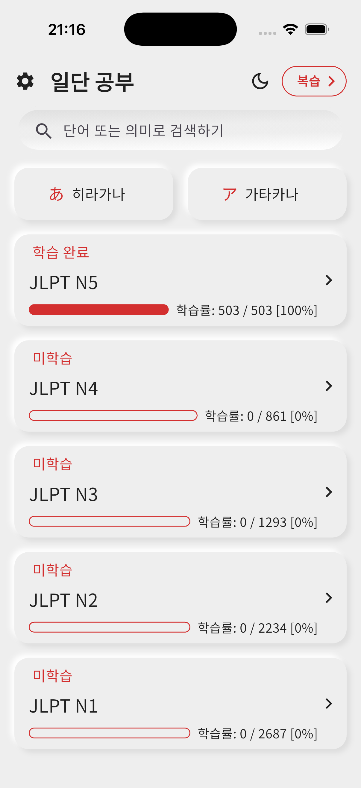
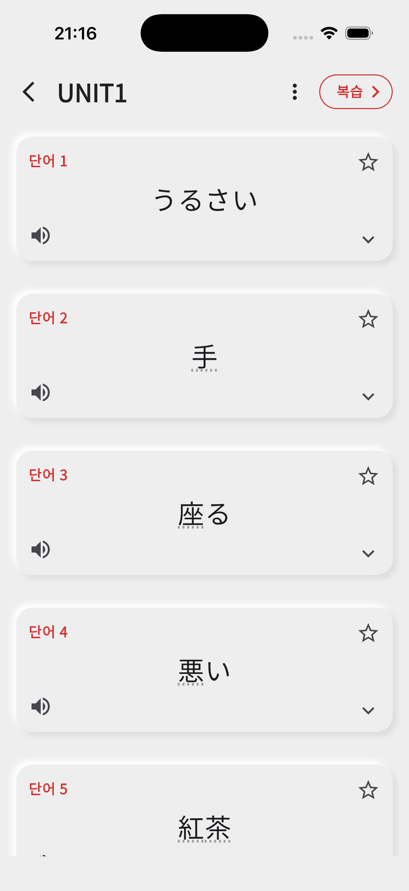
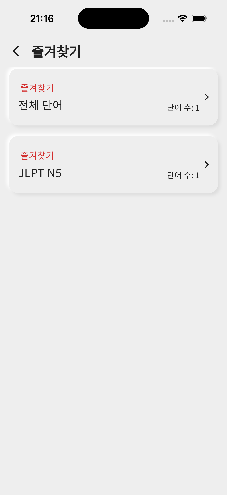
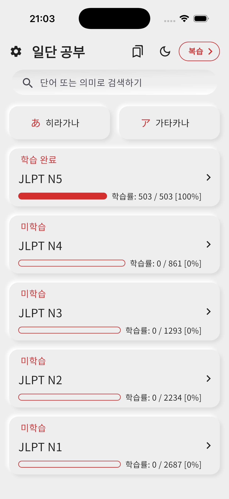
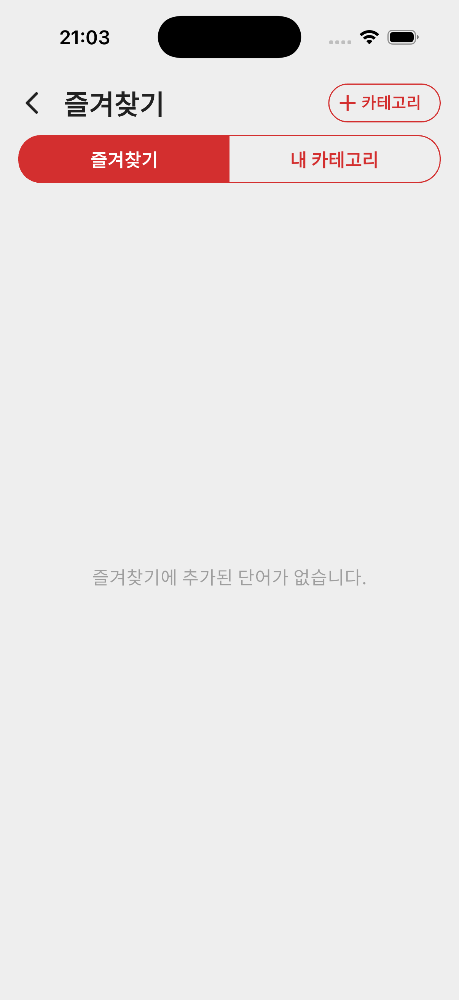
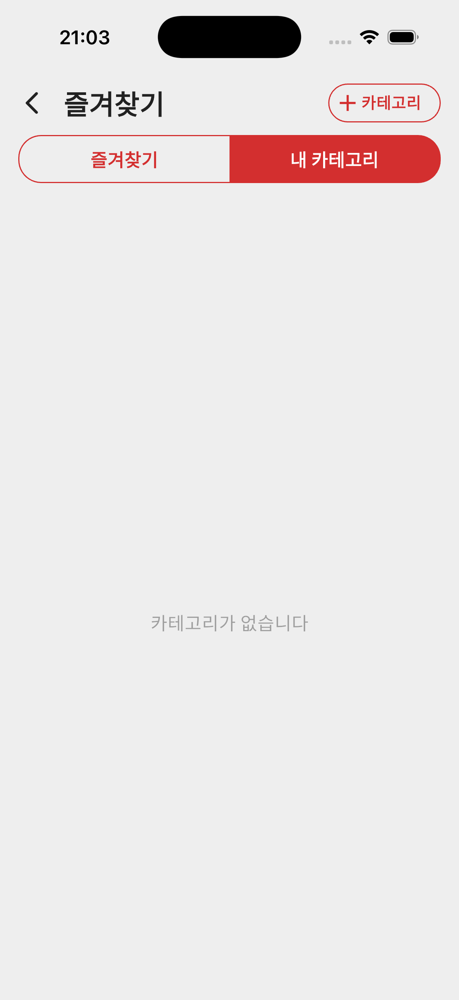
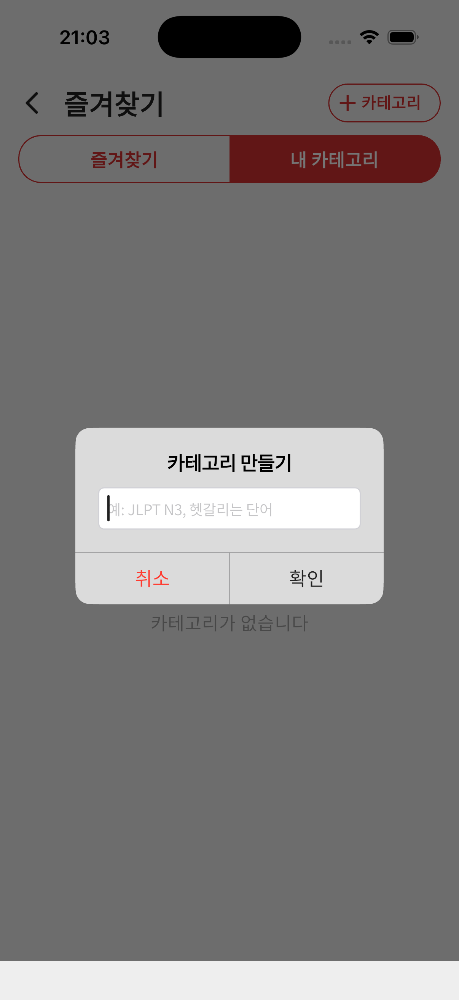
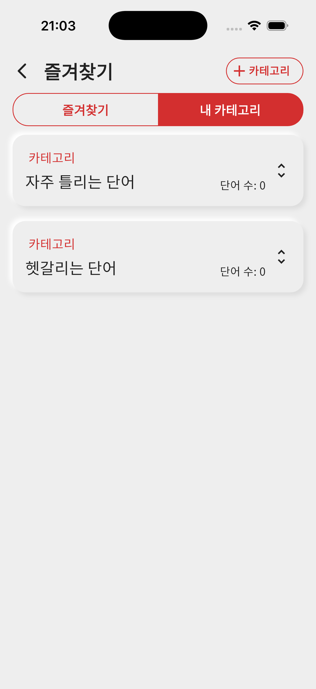
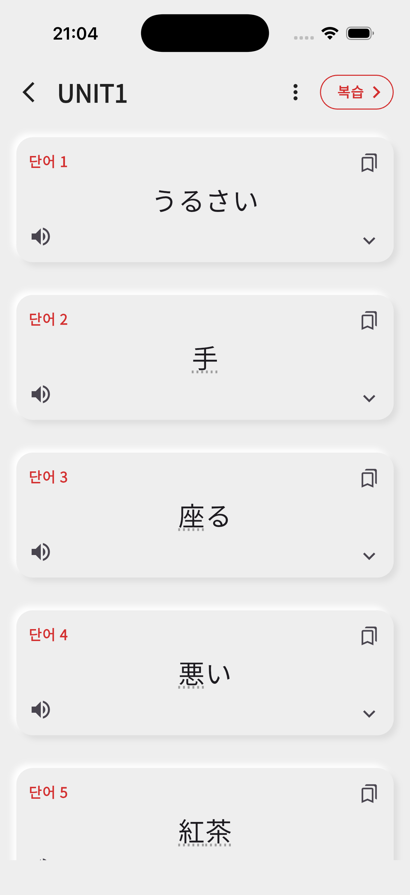
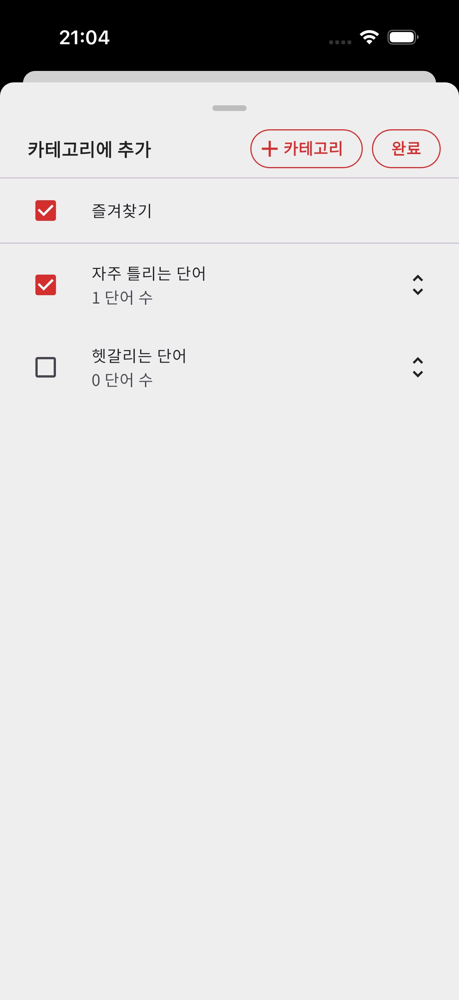

안녕하세요, 「JLPT 일본어 단어 공부, 일단 공부」 개발자 Deku입니다.
v6.11.0 업데이트를 통해 내 카테고리 기능이 추가되었습니다. 이제 나만의 카테고리를 만들어 단어를 자유롭게 분류하고 관리할 수 있습니다.
즐겨찾기 화면에 「내 카테고리」 탭이 추가되었습니다. 「자주 틀리는 단어」, 「헷갈리는 단어」 등 원하는 이름으로 카테고리를 자유롭게 만들 수 있습니다.
단어 학습 화면에서 카테고리 아이콘을 눌러 해당 단어를 즐겨찾기뿐만 아니라 내가 만든 여러 카테고리에 동시에 추가할 수 있습니다.
기존 즐겨찾기 화면이 「즐겨찾기」와 「내 카테고리」 두 개의 탭으로 개선되었습니다. 메인 화면 상단의 즐겨찾기 아이콘을 통해 접근할 수 있습니다.
기존에는 즐겨찾기에 추가하면 JLPT 레벨별로만 분류되었으며, 별 아이콘(☆)을 눌러 즐겨찾기에 추가할 수 있었습니다.



즐겨찾기 화면 개선 - 메인 화면에서 즐겨찾기 아이콘 추가, 즐겨찾기/내 카테고리 탭 분리



내 카테고리 만들기 - 원하는 이름으로 카테고리를 생성하고 관리


단어를 여러 카테고리에 추가 - 체크박스로 즐겨찾기와 내 카테고리에 동시 추가


이번 업데이트를 통해 자신만의 단어장을 더욱 체계적으로 관리하실 수 있습니다. 앞으로도 더 나은 학습 경험을 제공하기 위해 노력하겠습니다. 감사합니다.